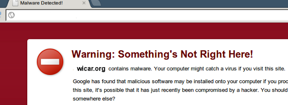

WICAR.org
Test Your Anti-Malware Solution!
Introduction
The wicar.org website was designed to test the correct operation your anti-virus / anti-malware software.
The name "WICAR" is derived from the industry standard EICAR anti-virus test file, which is a non-dangerous file that all anti-virus products flag as a real virus and quaratine or act upon as such. By being able to execute a test virus program safely, the end user or network administrator can ensure that the anti-virus software is correctly operating (without utilising a real virus which may damage the system should the anti-virus software fail to function).
How it works
When you visit a malicious website, a number of actions may occur:
- A search result in Google may mark the result with the message "This website may harm your computer" and prevent you from visiting the address.
- The web browser, such as Internet Explorer, Firefox and Chrome, maintain their own list of known malware sites and will prevent or warn you from accessing the site.
- If you are protected by an inline website filtering appliance, application layer inspecting firewall or proxy server, such as those commonly deployed in corporate environments, the solution will block access to the website.
- If you have desktop based anti-virus / anti-malware software installed, they often include technology which will flag malicious URLs and block them.
- Finally, if you have none of the above, it is likely you are now infected with malware.

Demonstration Video
Below is a demonstration video, using an unpatched Windows XP installation to exploit Internet Explorer using the known MS03-020 vulnerability. In a corporate environment, a combination of firewalls, IDS/IPS, gateway proxies, inline web filters, anti-malware, desktop anti-virus and patch management implementations should prevent access to malicious URLs.
Why?
There is not a standardised URL to test your anti-malware solution. Some browsers offer test malware pages, however they are not universal. Each anti-virus vendor has different detection mechanisms and independent lists of known malware sites. The wicar.org website contains actual browser exploits, therefore, regardless of search engine, web browser, filtering appliance or desktop anti-virus product you use, it should be marked as malicious.
All malware is hosted at: http://malware.wicar.org/, which is the correct address that should be blocked by anti-malware solutions (not this site).
The browser exploits were generated using the Metasploit Framework, with a payload to execute the Windows Calculator (calc.exe). Exploits for other operating systems may be provided at a later date.
Oh, and we used the 'W' in WICAR for World-Wide Web ;-)
If you have any questions regarding this website or the list of provided exploits, please contact us.